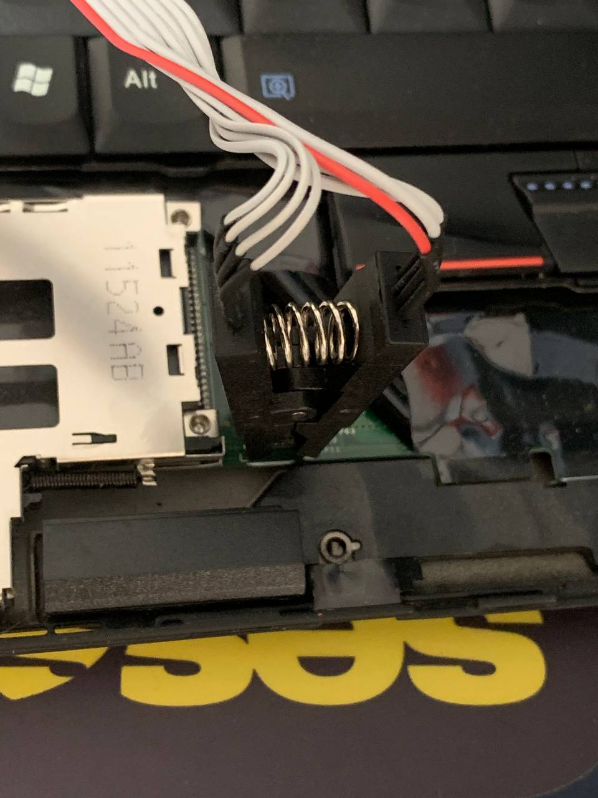
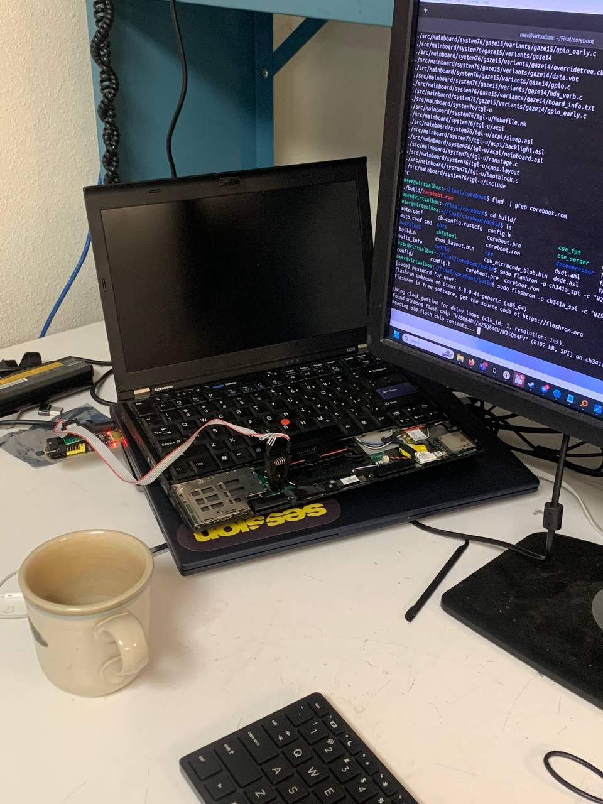
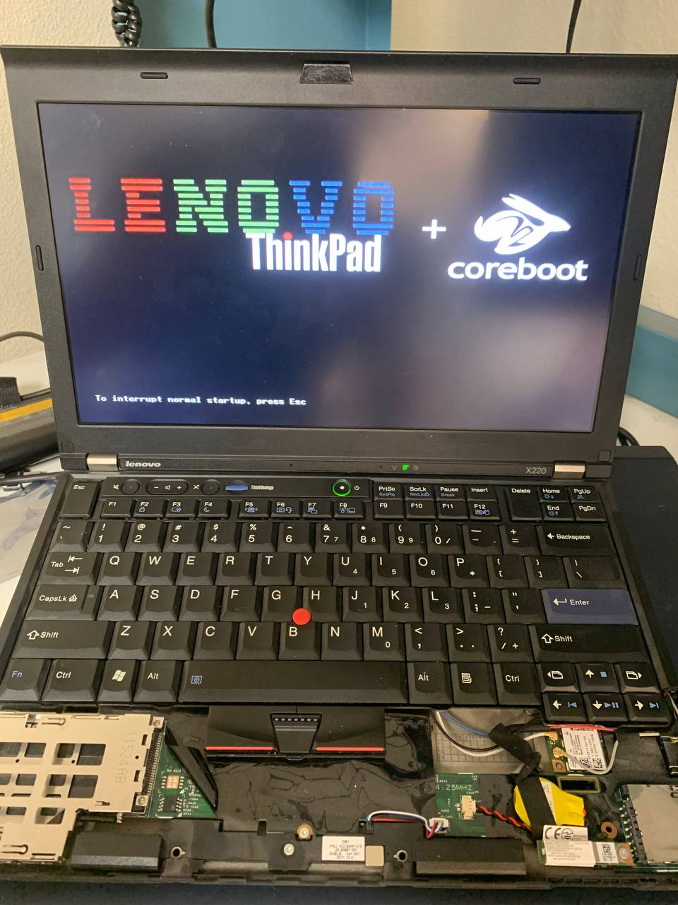

Summary of page
This isn't going to be a walkthrough of corebooting your Thinkpad X220. These are the steps you need to get the flasher working and connected to your system
Fyi: My host system is Windows 11 and a virtual machine with USB redirection was used to flash the system
I exported the factory default ROMS to my PC
Step 1 - Buy the flasher
I purchased the following CH341A programmer with the clip from Amazon. If you google this online, some people will report that the clip fried there chip because it runs at 5volts instead of 3.3v. I read some post online debunking this. The chip will start at 5volts and then move to 3.3v. The user reported that the fried chips were likely caused by improper placement of the clip.
This clip worked fine
Step 2 - Install the Drivers
I'm running this on Windows 11 and using a virtualbox to do the flashing. I installed these drivers on the host machine and then installed "AsProgrammer" to test if the connection between the programmer and the bios was working.
Driver: https://github.com/KrisKasprzak/CH341/ AsProgrammer: https://github.com/nofeletru/UsbAsp-flash/
Step 3 - Connecting to the BIOS
With the driver installed, I opened ASProgrammer and had it attempt to read the data from the BIOS. I was getting an error saying "Check Settings". This was because the clip wasn't properly seated on the bios chip.
Here are the images of how I have things connected. Make sure the positioning of the red cable matches below. This will be the exact setup you need to flash the BIOS. Check your hardware connections and even


Step 4 - Installing Coreboot
I followed Bryce's guide for the rest. The only important thing I did was install "flashrom" from the Ubuntu Repos. I didn't bother figuring out how to compile flashrom with support for the CH341A. It worked great. I did see that I had two different chips to flash from. I chose the one with the longer name ("w25q64bv-w25q64cv-w25q64fv"). I don't think it would have made a difference since reading both flash chips had the same filehash.
I used the github repo from nenadstoisavljevic and copied the bootsplash image and any settings in the configuration of coreboot. The only thing I didn't copy from that github repo were all the additional payloads that were selected.
https://brycevandegrift.xyz/blog/corebooting-a-thinkpad-x220/
https://github.com/nenadstoisavljevic/x220-coreboot-guide
My flashing failed once because the virtual machine was freaking out. I reset the system and reseated the USB (leaving the clip untouched). It worked after : )

Image of original BIOS
View my github below with the original BIOS images I took prior to corebooting.
https://github.com/peterunix/ThinkpadX220BIOS